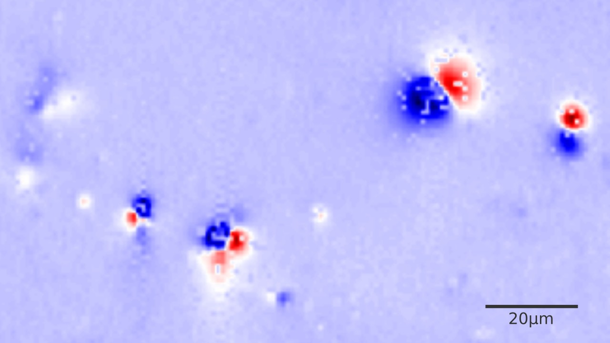

Royal Society grant to work on magnetic microscopy 🧲🔬
2022/03/31
The lab has just been awarded an International Exchange grant by the Royal Society! 🥳
The award titled “Towards individual-grain paleomagnetism: Translating regional-scale geophysics to the nascent field of magnetic microscopy” intends to establish a new partnership between the CompGeoLab and the Paleomagnetism Lab of the University of São Paulo, Brazil, led by Prof. Ricardo I. F. Trindade. It will fund bi-directional travel between Liverpool and São Paulo for myself, Ricardo, and PhD student Gelson.

I’m thrilled to be able to work closely with this group, which is where I got my first taste of research as an undergraduate!
Leo